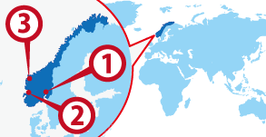

';
$header_obj->fncMenuHead_h1text = 'ノルウェー | ワーホリで行ける国（ワーキングホリデー協定国）';
//add javascript for country info
$header_obj->add_js_files='
';
if ($header_obj->computer_use() === false && $_SESSION['pc'] != 'on') {
$header_obj->add_css_files='';
} else {
$header_obj->add_css_files='';
}
$header_obj->display_header();
include('../../calendar_module/mod_event_horizontal.php');
?>
';
$header_obj->fncMenuHead_h1text = 'ノルウェー | ワーホリで行ける国（ワーキングホリデー協定国）';
//add javascript for country info
$header_obj->add_js_files='
';
if ($header_obj->computer_use() === false && $_SESSION['pc'] != 'on') {
$header_obj->add_css_files='';
} else {
$header_obj->add_css_files='';
}
$header_obj->display_header();
include('../../calendar_module/mod_event_horizontal.php');
?>

 Oslo
Oslo Bergen
Bergen Loen
Loen
ワーホリ協定国一覧へ戻る

ノルウェー人気都市 BEST3
ノルウェー基本情報
| 首都 | Oslo Commune |
|---|---|
| 言語 | Norsk, English |
| 面積 | 385,199 km²(世界66位) |
| 人口 | 5,109,056人(世界116位) |
| 通貨 | Norsk Krone (NOK) |
＊2014 年10 月時点の数値です
| 日本時間 | Oslo Commune |
|---|---|
 1月1日 09:00am |
1月1日 02:00am |
＊サマータイムの期間は時差が変動します
| 首都 | Oslo Commune |
|---|---|
| 面積 | 385,199 km²(世界66位) |
| 人口 | 5,109,056人(世界116位) |
| 言語 | Norsk, English |
|---|---|
| 通貨 | Norsk Krone (NOK) |
＊2014 年10 月時点の数値です |
|
日本との時差
| 日本時間 | Oslo Commune |
|---|---|
|
1月1日 09:00am |
1月1日 02:00am |
＊サマータイムの期間は時差が変動します
ノルウェーってどんな国？
ノルウェーは「森と山の国」と呼ばれるほど、自然が豊かな国だ。特に美しいフィオルドや、数々の渓谷は人々の心を魅了し続けている。そしてノルウェーの大きな特徴といえば、白夜の存在だろう。夏の期間は地球の公転の関係で、一日の日照時間が長くなる。その結果、夜になっても太陽が沈まない日ができるのだ。意外と知られていないが冬になると逆の現象が起き、一日中太陽が昇らない日もある。ノルウェーへ渡航する際は環境違いに気をつける必要がある。
ノルウェーは男女平等が進んでいる国としても有名だ。女性の参政権が認められたのは1913年と早く、世界でも先駆者的な立ち位置にいる。また、国民一人当たりに対するGDP（国内総生産）も世界2位と高く、とても住みやすい国といえるだろう。また、首都オスロをはじめ数多くの観光地が点在しており、ムンクの「叫び」など有名な美術品・建築物を楽しむために、世界各地から観光者が訪れている。
▼▼▼まずは無料セミナーへ！ワーキングホリデー＆留学の無料セミナーはこちら！▼▼▼